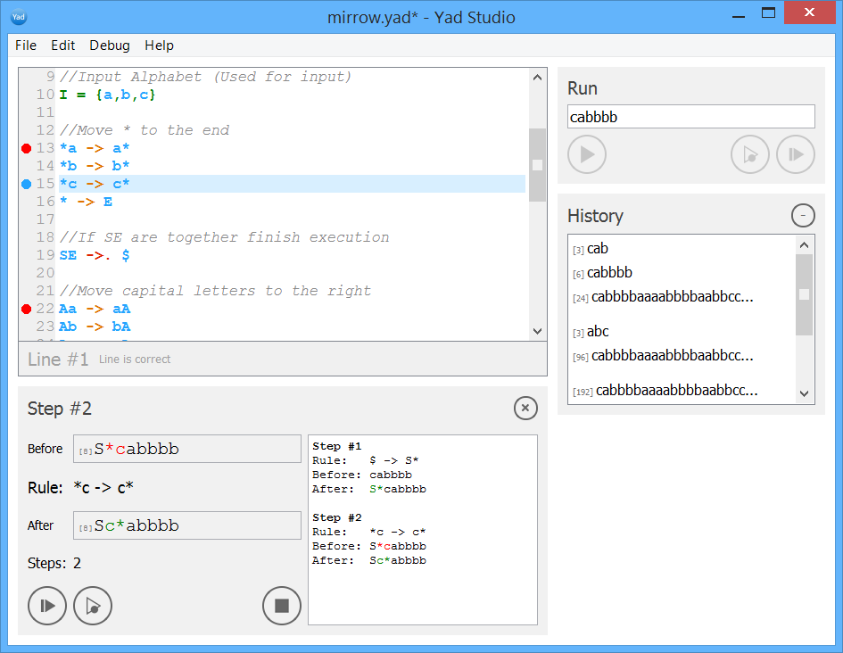

Description
Yad Studio is an easy IDE for Markov Algorithms interpretation. Read more about Markov Algorithms
Tutorial
Firstly, Define the Alphabeth T = {...} - the symbols which can be used in rules and Input Alphabet I = {...} - the symbols which can be used as input.
Please note that the alphabet definition is optional. If you do not define it then all symbols except system ones can be used in rules and input.
Than create rules (one rule in one row). You can use-> and ->.. The symbol ->.
creates terminated rules(if the algorythm use this rule - the program will be stoped). Please note that if no rules fits the input then the program will be finished.
There is an example:
T = {a,b,c,d}
aa->a
bbb->.c
Input word: bbbaaa Set it in right panel in the Input Word box.
Click Run button (at the right panel).
Output: ca Output will be saved in the Input history.
If you'd like to //add a comment write like this
Run with Debug
If you'd like to see how you program is executed you can run it in Debug mode. You can use Debug button (Shift+F5) and you will be able to see the debug run log.
Also you can put break points to the rules (click on the line number) and than when you use Debug Run the program will stop when it reached the break point. Than you can use Next Step (F10) (program will stop on the next rule) or Continue (program will stop when the algorithm reaches the next break point).
You can also run program with Step By Step button (F10) which will pause execution on the first rule and then you will be able to press F10 and execute program step by step.
Input History
Input history saves all your previous input strings during all the sessions.
If you'd like to add a line to the history, set string to Input Word box
and then Run or Run with Debug the program.
Use the previous input by double click and it will be setted in the Input Word box.
If you'd like to delete a line from the history use right click on activated row in the history and select
Delete in the context menu. Also you can activate row in the Input history and click on '-' button.
Unactive Run Button
If there is a mistake in the code Run and Run with Debug will not be active. The line(or lines) with the mistake will be matched in red color. For example if you use symbols which are not from the alphabeth lines become red.
Illegal Characters
It is forbidden to use in the Alphabeth to use empty char and symbols: -,>, ., ,, T, I
(used for Alphabeth initialisation)
Empty character
There is also a special character $ which represents empty symbol. For example rule 0 -> $ will erase 0. And rule $ -> a will append a to the beginning of the word.
The next code transforms binary written number into unary written
|0 -> 0|| 1->0| 0->$
Examples
You can find examples in examples folder which is the part of distribution:
- aaabbb.yad - program which says yes if the number of a's in first part equal to number of b's in second part
- mirrow.yad - program which returns mirrowed string (abc will be turned into cba)
- multiply.yad - program which multiplies two numbers
Authors and Contributors
The project was created in the National University "Kyiv-Mohyla Academy"(Ukraine), as a part of study project by Andrii Chaika (@seagullua), Diana Sirenko (@dianasi), and Yura Grischenko (@yuragri).
Support and Contact
Having trouble with Yad Studio? Contact yad.studio.pro@gmail.com and we’ll help you to solve your problems.